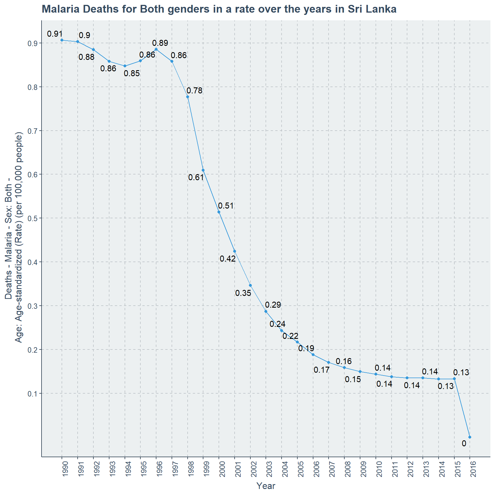
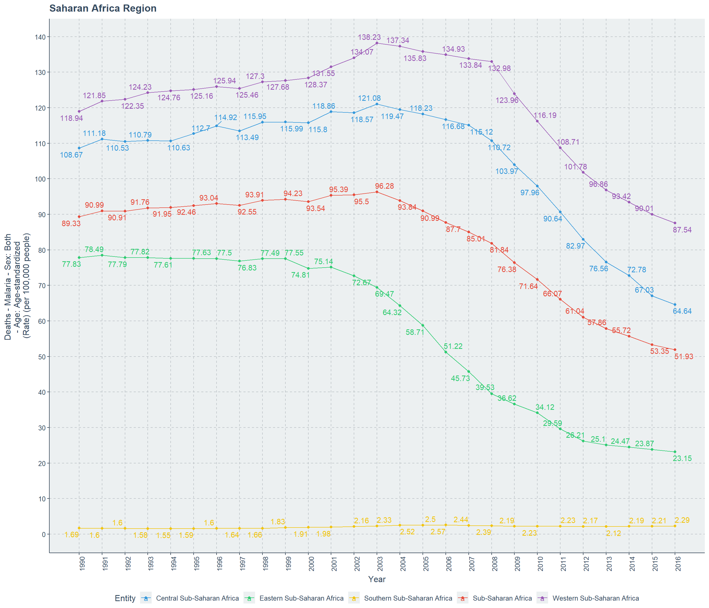
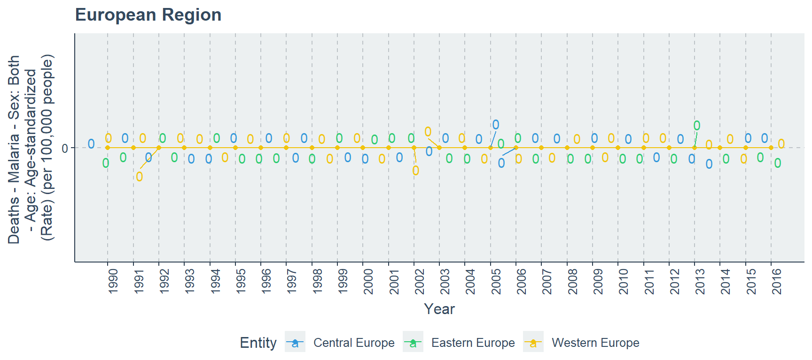
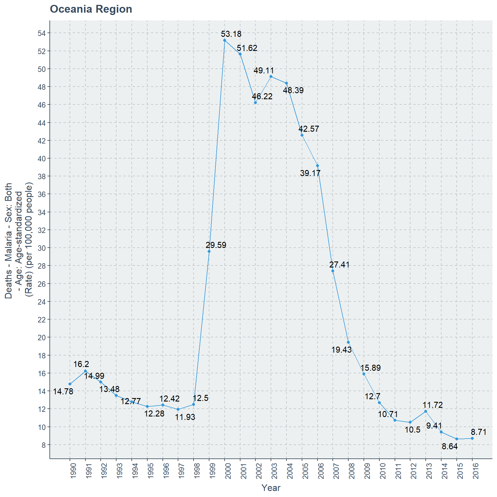

# load the packages
library(ggplot2)
library(ggrepel)
library(ggthemr)
library(magrittr)
library(stringr)
library(gridExtra)
library(readr)
library(gganimate)
# load the theme flat
ggthemr("flat")
#load the data sets
malaria_deaths<-read_csv("malaria_deaths.csv")
malaria_deaths_age<-read_csv("malaria_deaths_age.csv")
attach(malaria_deaths)
attach(malaria_deaths_age)
# disseminating data
Malaria_deaths_Code_missing<-malaria_deaths[!complete.cases(Code),]
MD_CM_SDI<-subset(Malaria_deaths_Code_missing,Entity == "High-middle SDI" |
Entity == "High SDI" | Entity == "Low SDI" |
Entity =="Low-middle SDI" | Entity =="Middle SDI")
MD_CM_Sahara<-subset(Malaria_deaths_Code_missing,Entity == "Central Sub-Saharan Africa" |
Entity == "Western Sub-Saharan Africa" | Entity == "Southern Sub-Saharan Africa" |
Entity =="Eastern Sub-Saharan Africa" | Entity =="Sub-Saharan Africa")
MD_CM_EU<-subset(Malaria_deaths_Code_missing,Entity == "Western Europe" |
Entity == "Eastern Europe" | Entity == "Central Europe")
MD_CM_GB<-subset(Malaria_deaths_Code_missing,Entity == "England" |
Entity == "Northern Ireland" | Entity == "Scotland" | Entity =="Wales")
MD_CM_LA<-subset(Malaria_deaths_Code_missing,Entity == "Andean Latin America" |
Entity == "North America" | Entity == "Southern Latin America" |
Entity =="Tropical Latin America" | Entity =="Central Latin America" )
MD_CM_A<-subset(Malaria_deaths_Code_missing,Entity == "North Africa and Middle East" |
Entity == "Southeast Asia" | Entity == "Australasia" |
Entity =="East Asia" | Entity =="Central Asia" | Entity =="Oceania"|
Entity =="High-income Asia Pacific"| Entity =="South Asia" )
MD_CM_C_LA<-subset(Malaria_deaths_Code_missing,Entity == "Caribbean" |
Entity == "Latin America and Caribbean")
# disseminating data
#Malaria_deaths_age_Code_missing<-malaria_deaths_age[!complete.cases(code),]
#MD_age_CM_SDI<-subset(Malaria_deaths_age_Code_missing,entity == "High-middle SDI" |
# entity == "High SDI" | entity == "Low SDI" |
# entity =="Low-middle SDI" | entity =="Middle SDI")
#MD_age_CM_Sahara<-subset(Malaria_deaths_age_Code_missing,entity == "Central Sub-Saharan Africa" |
# entity == "Western Sub-Saharan Africa" | entity == "Southern Sub-Saharan Africa" |
# entity =="Eastern Sub-Saharan Africa" | entity =="Sub-Saharan Africa")
#MD_age_CM_EU<-subset(Malaria_deaths_age_Code_missing,entity == "Western Europe" |
# entity == "Eastern Europe" | entity == "Central Europe")
#MD_age_CM_GB<-subset(Malaria_deaths_age_Code_missing,entity == "England" |
# entity == "Northern Ireland" | entity == "Scotland" |
# entity =="Wales" )
#MD_age_CM_LA<-subset(Malaria_deaths_age_Code_missing,entity == "Andean Latin America" |
# entity == "North America" | entity == "Southern Latin America" |
# entity =="Tropical Latin America" | entity =="Central Latin America")
#MD_age_CM_A<-subset(Malaria_deaths_age_Code_missing,entity == "North Africa and Middle East"|
# entity == "Southeast Asia" | entity == "Australasia" | entity =="East Asia"|
# entity =="Central Asia" | entity =="Oceania"|
# entity =="High-income Asia Pacific"| entity =="South Asia" )
#MD_age_CM_C_LA<-subset(Malaria_deaths_age_Code_missing,entity == "Caribbean" |
# entity == "Latin America and Caribbean")Week 33 : Malaria Deaths
TidyTuesday
2018
What I posted in #TidyTuesday on 13th November 2018.
Below is the code and simple analysis I posted in relative to the Malaria data. I only focused on Sri Lanka and Malaria deaths over years. I could not find anything else at that time, but over the days I realized it should be worth to see how death rate counts change with different regions which do not have Code variable assigned for the data sets malaria deaths and malaria deaths of age.
{{% tweet "1062339233967415296" %}}
- Packages : ggplot2, ggrepel, ggthemr
- TidyTuesday : week 33
- Data: malaria_deaths
- Malaria_deaths_plot: Plot shows the death rate per 100,000 people in Sri Lanka decreasing rapidly from 1996 to 2003 with a drop of 0.89 to 0.24, and by 2016 it reaches 0. While in 2015 this rate is 0.13. Highest death rate was in 1990 with 0.91.
#data subset has been used
#scales of x and y have been more scrutinized
#labels have been added
#x axis have been modified to accomodate the years
Malaria_deaths_plot<-ggplot(subset.data.frame(malaria_deaths,Code=="LKA"),
aes(x=Year,
y= `Deaths - Malaria - Sex: Both - Age: Age-standardized (Rate) (per 100,000 people)`,
label=round(`Deaths - Malaria - Sex: Both - Age: Age-standardized (Rate) (per 100,000 people)`,2)))+
geom_point()+geom_line()+geom_text_repel()+
ggtitle("Malaria Deaths for Both genders in a rate over the years in Sri Lanka")+
ylab("Deaths - Malaria - Sex: Both -\n Age: Age-standardized (Rate) (per 100,000 people)")+
scale_y_continuous(breaks=seq(0.1,1,by=0.1) ,labels=seq(0.1,1,by=0.1))+
scale_x_continuous(breaks=seq(1990,2016),labels =seq(1990,2016))+
theme(axis.text.x = element_text(angle = 90))
# print the plot
print(Malaria_deaths_plot)
# save the plot
ggsave(Malaria_deaths_plot,width = 10,height = 10,dpi=300,
filename = "Malaria_Deaths_Sri Lanka.png")- Data: malaria_deaths_age
- Malaria_deaths_age_plot: There are five categories in concern,where age category 15-49 has the most counts of in the range of 45-50. Second category is Under 5 close to 35 counts, while third category is 50-69 in-between 20-25. It should be noted that this order is for the year 1990. At the end of year 2015 this is not the case, where the categories and counts are 15-49 (close to 10), 50-69 (less than 10), 70 or order(close to 5), under 5(less than 5) and finally 5-14 (close to 0).
#data subset has been used
#according to age group colors are assigned
#scales of x and y have been more scrutinized
#labels have been added
#x axis have been modified to accomodate the years
Malaria_deaths_age_plot<-ggplot(subset.data.frame(malaria_deaths_age,code=="LKA"),
aes(x=year,y=deaths,color=factor(age_group)))+
geom_point()+geom_line()+
ggtitle("Malaria Deaths by age category in Sri Lanka over the years")+
ylab("Deaths Count")+
scale_x_continuous(breaks=seq(1990,2016),labels =seq(1990,2016))+
scale_y_continuous(breaks=seq(0,60,by=5) ,labels=seq(0,60,by=5))+
theme(axis.text.x = element_text(angle = 90))+
scale_color_discrete(name="Age Category")
# print the plot
print(Malaria_deaths_age_plot)
# save the plot
ggsave(Malaria_deaths_age_plot,width=10,height = 10,dpi = 300,
filename = "Malaria Deaths Sri Lanka by Age.png")Malaria Death count rate can be observed by countries or specific regions given in the data set. There are 9 regions in concern and each of these regions have sub parts or collections of countries. Variables included in this data-set are
- Entity - Full name of a country or region it is referred.
- Code - 3 letter ISO code for countries, but for regions there are no values.
- Year - Year range from 1990 to 2016.
- Deaths - Malaria - Sex : Both - Age : Age - Standardized (Rate) (per 100,000 people) - Number of people dead for both sexes per 100,000 people in a standardized age because of Malaria.
The Description of the data-set. I will focus on each region separately, because even inside the same region sub parts can behave differently. The 9 regions are
- SDI Countries
- Saharan Region
- European Countries
- Great Britain or United Kingdom
- American Region
- Asian Countries
- North Africa and Middle East
- Oceania Region
- Caribbean and Latin American Countries
SDI Countries with Malaria Death Count Rate
Initially there are 5 sub parts in SDI countries, but we can factor them into three based on their death rate behavior. Some regions are having higher death rate close to 75, while others have lower death rate close to 0.0002.
First group is the sub regions which are having higher death rates than other SDI regions, which are Low SDI and Low-middle SDI countries. Low SDI countries are behaving poorly from 1990 with a 73.78 death rate which reaches it highest peek of 75.88 in 2001 after this death rate gradually declines until 2016 and reaches 37.87.
This is not the case for Low middle SDI countries where in 1990 death rate is 19.11 and reaches its peek of 22.01 in 2003 with small fluctuations. After this it gradually and slowly declines until 2016 while finishing in a rate of 15.7.
attach(MD_CM_SDI)
# scatter plot for Low and Low middle SDI
ggplot(subset(MD_CM_SDI,Entity == "Low SDI" | Entity == "Low-middle SDI"),
aes(x=Year,
y=`Deaths - Malaria - Sex: Both - Age: Age-standardized (Rate) (per 100,000 people)`,
color=Entity,
label=round(`Deaths - Malaria - Sex: Both - Age: Age-standardized (Rate) (per 100,000 people)`,2)))+
ylab("Deaths - Malaria - Sex: Both \n- Age: Age-standardized \n(Rate) (per 100,000 people)")+
ggtitle("Low-middle and Low SDI Countries")+ geom_text_repel()+
geom_point()+geom_line()+scale_x_continuous(breaks=seq(1990,2016),labels =seq(1990,2016))+
legend_bottom()+ theme(axis.text.x = element_text(angle = 90))+
scale_y_continuous(labels = seq(15,80,5),breaks =seq(15,80,5))
SDI countries Middle and High-middle are performing better than the above two regions from 1990 itself. While Middle SDI countries have a very low death rate of close to 1 and periodically it decreases to 0.6 at 2016. To be exact in 1990 the death rate is 0.9274 and decrement occurs with small but unaffected fluctuations and reaches 0.6018 in 2016, which is the lowest point.
For High middle SDI countries the death rate in 1990 is 0.1168 and in 1996 it reaches the highest point of 0.1281. After 1996 there is clear decrease of death rate which reaches its minimum value of 0.0454 in 2013.
# scatter plot for High middle and Middle
ggplot(subset(MD_CM_SDI,Entity == "Middle SDI"| Entity == "High-middle SDI"),
aes(x=Year,
y=`Deaths - Malaria - Sex: Both - Age: Age-standardized (Rate) (per 100,000 people)`,
color=Entity,
label=round(`Deaths - Malaria - Sex: Both - Age: Age-standardized (Rate) (per 100,000 people)`,4)))+
ylab("Deaths - Malaria - Sex: Both \n- Age: Age-standardized \n(Rate) (per 100,000 people)")+
ggtitle("Middle and High-middle SDI Countries")+ geom_text_repel()+
geom_point()+geom_line()+ legend_bottom()+
scale_x_continuous(breaks=seq(1990,2016),labels =seq(1990,2016))+
theme(axis.text.x = element_text(angle = 90))+
scale_y_continuous(labels = seq(0,1,0.05),breaks =seq(0,1,0.05))
High SDI countries are showing very strong decrease from 1990 it self. While in 1990 the death rate is 0.001387 and by polynomial decreasing by 2016 this reaches the least value of 0.000194.
# scatter plot for High SDI
ggplot(subset(MD_CM_SDI, Entity =="High SDI" ),
aes(x=Year,
y=`Deaths - Malaria - Sex: Both - Age: Age-standardized (Rate) (per 100,000 people)`,
label=round(`Deaths - Malaria - Sex: Both - Age: Age-standardized (Rate) (per 100,000 people)`,6)))+
ylab("Deaths - Malaria - Sex: Both \n- Age: Age-standardized \n(Rate) (per 100,000 people)")+
ggtitle("High SDI Countries")+ geom_text_repel()+
legend_bottom()+ geom_point()+ geom_line()+
scale_x_continuous(breaks=seq(1990,2016),labels =seq(1990,2016))+
theme(axis.text.x = element_text(angle = 90))+
scale_y_continuous(labels = seq(0,0.0014,0.0002),breaks =seq(0,0.0014,0.0002))
detach(MD_CM_SDI)If we do plot all these 5 sub parts of SDI countries on one plot we would not have seen these differences and even if we do use facet grid this is not possible. Therefore, first I did plot all 5 regions together and then sub setted them based on their death rate change in values.
It is clear that High SDI values have the lowest death rate and Low, Low middle SDI have the highest death rates over the years 1990 to 2016.
Saharan Region with Malaria Death Count Rate
There are 5 sub parts for Saharan region countries, which are Central Sub-Saharan, Eastern Sub-Saharan, Southern Sub-Saharan, Western Sub-Saharan and Sub-Saharan Africa countries. Here though it does not look like we need to separate these regions and plot them as groups. While plotting them as a whole they are clear and possible to interpret the differences in this line plot.
Central Sub-Saharan Africa and Western Sub-Saharan Africa countries behave similarly where they start with death rates respectively 108.67, 118.94. Further this death rate increases and reaches its highest peaks of 138.23 and 121.08 respectively for Western Sub-Saharan Africa and Central Sub-Saharan Africa countries for the year 2003. Finally they decrease into their lowest of 64.64 death rate for Central Sub-Saharan Africa and 87.54 death rate for Western Sub-Saharan Africa.
Sub-Saharan Africa Regions has a higher death rate performance through out the time line when it begins with 89.33 in 1990, and reaches its highest value of 96.28 in 2003. Further death rate decreases slowly up-to 51.93 in 2016, which is the least minimum value. Eastern Sub-Saharan Africa starts with 77.83 in 1990 and reaches its peak of 78.49 in 1991. In the next few years until 2000 there is small fluctuations. Finally there is a steep slope and reaches its lowest death rate value of 23.15 in 2016.
Death rate of Southern Sub-Saharan Africa is completely different than above four sub regions of Saharan Africa. In 1990 the death rate is 1.69 and it fluctuates until 2016, but it reaches the highest death rate of 2.57 in 2006. Further with this fluctuation in 2016 the death rate is 2.29 which is higher than the previous 7 years from 2016.
attach(MD_CM_Sahara)
# scatter plot for Sahara Region
ggplot(MD_CM_Sahara,
aes(x=Year,
y=`Deaths - Malaria - Sex: Both - Age: Age-standardized (Rate) (per 100,000 people)`,
color=Entity,
label=round(`Deaths - Malaria - Sex: Both - Age: Age-standardized (Rate) (per 100,000 people)`,2)))+
ylab("Deaths - Malaria - Sex: Both \n- Age: Age-standardized \n(Rate) (per 100,000 people)")+
ggtitle("Saharan Africa Region")+geom_point()+geom_line()+ legend_bottom()+
scale_x_continuous(breaks=seq(1990,2016),labels =seq(1990,2016))+ geom_text_repel()+
theme(axis.text.x = element_text(angle = 90))+
scale_y_continuous(labels = seq(0,140,10),breaks =seq(0,140,10))
detach(MD_CM_Sahara)Considering 1990 and 2016 the biggest decrease occurs for the region of Eastern Sub-Saharan Africa, while the lowest decrease is for Western Sub-Saharan Africa. While in the year gap of 1990 and 2016 only Southern Sub-Saharan Africa has an increase in death rate from 1.69 to 2.29.
European Countries with Malaria Death Count Rate
I believe that European countries did not have any malaria related deaths even before 1990, because of their weather patterns. That is simply assured by here in this plot, where there is no deaths for the sub regions of Europe. Which are Central Europe, Eastern Europe and Western Europe.
attach(MD_CM_EU)
# scatter plot for European Region
ggplot(MD_CM_EU,
aes(x=Year,
y=`Deaths - Malaria - Sex: Both - Age: Age-standardized (Rate) (per 100,000 people)`,
color=Entity,
label=`Deaths - Malaria - Sex: Both - Age: Age-standardized (Rate) (per 100,000 people)`))+
ylab("Deaths - Malaria - Sex: Both \n- Age: Age-standardized \n(Rate) (per 100,000 people)")+
ggtitle("European Region")+ geom_point()+geom_line()+ legend_bottom()+
scale_x_continuous(breaks=seq(1990,2016),labels =seq(1990,2016))+
theme(axis.text.x = element_text(angle = 90))+geom_text_repel()+
scale_y_continuous(labels = seq(0,140,10),breaks =seq(0,140,10))
detach(MD_CM_EU)Great Britain or United Kingdom with Malaria Death Count Rate
We consider the collection of these countries as Great Britain or United Kingdom, which are England, Northern Ireland, Scotland and Wales. Here also weather pattern does have a high probability in causing a situation of no malaria related deaths. Further, these four countries are close to the European regions geographically therefore this assures us more that over the years from 1990 to 2016 the death rate is zero.
attach(MD_CM_GB)
# scatter plot for Great Britain or United Kingdom
ggplot(MD_CM_GB,
aes(x=Year,
y=`Deaths - Malaria - Sex: Both - Age: Age-standardized (Rate) (per 100,000 people)`,
color=Entity,
label=`Deaths - Malaria - Sex: Both - Age: Age-standardized (Rate) (per 100,000 people)`))+
ylab("Deaths - Malaria - Sex: Both \n- Age: Age-standardized \n(Rate) (per 100,000 people)")+
ggtitle("Great Britain or United Kingdom")+ legend_bottom()+
geom_point()+geom_line()+ geom_text_repel()+
scale_x_continuous(breaks=seq(1990,2016),labels =seq(1990,2016))+
theme(axis.text.x = element_text(angle = 90))+
scale_y_continuous(labels = seq(0,1,0.5),breaks =seq(0,1,0.5))
detach(MD_CM_GB)American Region with Malaria Death Count Rate
There are 5 sub regions for American countries, yet we can divide them into two groups. One group will include Andean, Central and Tropical Latin American countries, and other group includes North America and Southern Latin American countries.
In the first group, Andean and Tropical Latin American countries begin with respectively 0.354, 0.351 death rates in 1990. This gradually decreases until 2016 for both regions, but Tropical Latin countries has a better decrement than Andean Latin American countries because they achieve death rate of respectively 0.038 and 0.048.
In this same time period of 1990 to 2016, Central Latin American begins with a death rate of 0.296 and reaches its lowest point of 0.053. In year 1994, Tropical Latin American region and Central Latin American region have the same death rate of 0.222. Further in the years 2004 and 2005 the death rates of Andean Latin American countries are 0.089, 0.071, but the same years Central Latin American region has death rates of 0.088, 0.080. Those are the two crucial changes which occur.
attach(MD_CM_LA)
# scatter plot for Andean, Central and Tropical Latin America
ggplot(subset(MD_CM_LA,Entity == "Andean Latin America"| Entity == "Central Latin America" |
Entity == "Tropical Latin America"),
aes(x=Year,
y=`Deaths - Malaria - Sex: Both - Age: Age-standardized (Rate) (per 100,000 people)`,
color=Entity,
label=round(`Deaths - Malaria - Sex: Both - Age: Age-standardized (Rate) (per 100,000 people)`,3)))+
ylab("Deaths - Malaria - Sex: Both \n- Age: Age-standardized \n(Rate) (per 100,000 people)")+
ggtitle("Andean, Central and Tropical Latin American Region")+
geom_point()+geom_line()+ legend_bottom()+ geom_text_repel()+
scale_x_continuous(breaks=seq(1990,2016),labels =seq(1990,2016))+
theme(axis.text.x = element_text(angle = 90))+
scale_y_continuous(labels = seq(0,0.40,0.05),breaks =seq(0,0.40,0.05))
The second group has North American region and Southern Latin American region. Clearly North America with its cold weather condition and developed status does not hold any deaths for malaria from 1990 to 2016. It is even possible to consider before this time range also there was no deaths for malaria. Yet Southern Latin American has death rate of 0.0208 in 1990 but decreases gradually and reaches its least minimum point of 0.0035 in 2016.
# scatter plot for North and Southern Latin America
ggplot(subset(MD_CM_LA,Entity== "North America"| Entity =="Southern Latin America"),
aes(x=Year,
y=`Deaths - Malaria - Sex: Both - Age: Age-standardized (Rate) (per 100,000 people)`,
color=Entity,
label=round(`Deaths - Malaria - Sex: Both - Age: Age-standardized (Rate) (per 100,000 people)`,4)))+
ylab("Deaths - Malaria - Sex: Both \n- Age: Age-standardized \n(Rate) (per 100,000 people)")+
ggtitle("North America and Southern Latin American Region")+
geom_point()+geom_line()+ legend_bottom()+ geom_text_repel()+
scale_x_continuous(breaks=seq(1990,2016),labels =seq(1990,2016))+
theme(axis.text.x = element_text(angle = 90))+
scale_y_continuous(labels = seq(0,0.021,0.001),breaks =seq(0,0.021,0.001))
detach(MD_CM_LA)Comparing the American region only North American region is malaria free, while least amount progress has occurred in Central Latin American region. Tropical region has out performed Andean Latin American region. Next to North America, Southern Latin American has done more progress than other three regions.
Asian Countries with Malaria Death Count Rate
There are 6 regions in the Asian region, which are South Asia, Southeast Asia, East Asia, High Income Asia Pacific, Australasia and Central Asia. Asia is a Large continent with wide variety of countries therefore we have more sub regions than any other continent here.
South Asia and Southeast Asia are two regions which behave similarly where it begins in a higher rate in year 1990 and gradually decreasing until year 2016. South Asia has a death rate of 6.21 in 1990, but in 2016 it reaches to 3.61. For Southeast Asian region the death rate is 5.29 in year 1990 and reaches the death rate of 2.56 in year 2016.
attach(MD_CM_A)
# scatter plot for South Asia and Southeast Asia
ggplot(subset(MD_CM_A,Entity == "South Asia" | Entity == "Southeast Asia"),
aes(x=Year,
y=`Deaths - Malaria - Sex: Both - Age: Age-standardized (Rate) (per 100,000 people)`,
color=Entity,
label=round(`Deaths - Malaria - Sex: Both - Age: Age-standardized (Rate) (per 100,000 people)`,2)))+
ylab("Deaths - Malaria - Sex: Both \n- Age: Age-standardized \n(Rate) (per 100,000 people)")+
ggtitle("South Asia and Southeast Asia Region")+
geom_point()+geom_line()+ legend_bottom()+ geom_text_repel()+
scale_x_continuous(breaks=seq(1990,2016),labels =seq(1990,2016))+
theme(axis.text.x = element_text(angle = 90))+
scale_y_continuous(labels = seq(2.4,6.4,0.2),breaks =seq(2.4,6.4,0.2))
East Asia region begins with a death rate of 0.0269 in year 1990 and it decreases over the coming years which will reach the lowest death rate of 0.0121 in year 2015. Further in year 2016 it slightly increases to 0.0122.
# scatter plot for East Asia
ggplot(subset(MD_CM_A, Entity == "East Asia"),
aes(x=Year,
y=`Deaths - Malaria - Sex: Both - Age: Age-standardized (Rate) (per 100,000 people)`,
label=round(`Deaths - Malaria - Sex: Both - Age: Age-standardized (Rate) (per 100,000 people)`,4)))+
ylab("Deaths - Malaria - Sex: Both \n- Age: Age-standardized \n(Rate) (per 100,000 people)")+
ggtitle("East Asia Region")+
geom_point()+ geom_line()+ legend_bottom()+ geom_text_repel()+
scale_x_continuous(breaks=seq(1990,2016),labels =seq(1990,2016))+
theme(axis.text.x = element_text(angle = 90))+
scale_y_continuous(labels = seq(0.01,0.03,0.002),breaks =seq(0.01,0.03,0.002))
Central Asia region begins with a a death rate of 0.0304 in year 1990 and increases very slowly until year 1998 towards the death rate of 0.0314. After this the death rate decreases gradually until year 2013 where it becomes 0.0057. Until year 2016 this becomes the standard death rate for malaria in Central Asia Region.
# scatter plot for Central Asia
ggplot(subset(MD_CM_A,Entity == "Central Asia"),
aes(x=Year,
y=`Deaths - Malaria - Sex: Both - Age: Age-standardized (Rate) (per 100,000 people)`,
label=round(`Deaths - Malaria - Sex: Both - Age: Age-standardized (Rate) (per 100,000 people)`,4)))+
ylab("Deaths - Malaria - Sex: Both \n- Age: Age-standardized \n(Rate) (per 100,000 people)")+
ggtitle("Central Asia Region")+ geom_text_repel()+
geom_point()+geom_line()+ legend_bottom()+
scale_x_continuous(breaks=seq(1990,2016),labels =seq(1990,2016))+
theme(axis.text.x = element_text(angle = 90))+
scale_y_continuous(labels = seq(0,0.05,0.005),breaks =seq(0,0.05,0.005))
High Income Asia Pacific countries have a lower death rate than previous Asian region countries where in 1990 the death rate is 0.0073 but over the years it decreases gradually and reaches the lowest death rate value of 0.0008 in year 2016.
Australasia countries have no death rate over the year range of 1990 to 2016, which implicate that there is a possibility that before 1990 also there could have not been any deaths related to malaria
# scatter plot for High Income Pacific and Australasia
ggplot(subset(MD_CM_A, Entity == "Australasia" | Entity == "High-income Asia Pacific" ),
aes(x=Year,
y=`Deaths - Malaria - Sex: Both - Age: Age-standardized (Rate) (per 100,000 people)`,color=Entity,
label=round(`Deaths - Malaria - Sex: Both - Age: Age-standardized (Rate) (per 100,000 people)`,4)))+
ylab("Deaths - Malaria - Sex: Both \n- Age: Age-standardized \n(Rate) (per 100,000 people)")+
ggtitle("High Income Asia Pacific and Australasia Region")+
geom_point()+geom_line()+ legend_bottom()+ geom_text_repel()+
scale_x_continuous(breaks=seq(1990,2016),labels =seq(1990,2016))+
theme(axis.text.x = element_text(angle = 90))+
scale_y_continuous(labels = seq(0.001,0.008,0.0005),breaks =seq(0.001,0.008,0.0005))
detach(MD_CM_A)Australasia is the only region which does not have malaria over the years given in the data set. The lowest death rate occurs to High Income Asian Pacific region than other regions of Asia.
North Africa and Middle East Region with Death Count Rate
North Africa and Middle East region is the only odd region of all in this data set for malaria death rate. In year 1990 the death rate is 0.7968 but in the coming years it increases until 2005 and reaches 1.3444. Despite this increment after 2005 the death rate suddenly and rapidly drops until year 2011 and reaches its lowest point of 0.731. Again there is a steady but slow increase in death rate and reaches 0.8332 in year 2016.
attach(MD_CM_A)
# scatter plot to North Africa and Middle East
ggplot(subset(MD_CM_A, Entity == "North Africa and Middle East" ),
aes(x=Year,
y=`Deaths - Malaria - Sex: Both - Age: Age-standardized (Rate) (per 100,000 people)`,
label=round(`Deaths - Malaria - Sex: Both - Age: Age-standardized (Rate) (per 100,000 people)`,4)))+
ggtitle("North Africa and Middle East Region")+
ylab("Deaths - Malaria - Sex: Both \n- Age: Age-standardized \n(Rate) (per 100,000 people)")+
geom_point()+geom_line()+ legend_bottom()+ geom_text_repel()+
scale_x_continuous(breaks=seq(1990,2016),labels =seq(1990,2016))+
theme(axis.text.x = element_text(angle = 90))+
scale_y_continuous(labels = seq(0.5,1.5,0.05),breaks =seq(0.5,1.5,0.05))
detach(MD_CM_A)Comparing all the other regions in this data set only North Africa and Middle East Region was very special with its odd fluctuations. At the end comparing the death rates of year 1990 and 2016 there is an increase close to 0.04, but it is far less than what was in year 2005 and 1990.
Oceania Region with Death Count Rate
Oceania region begins the malaria death rate of 14.78 in 1990, even though it oscillates over the next few years and reaches a death rate of 12.5 in 1998 and in year 2000 it reaches a staggering highest peak of 53.18 death rate. After reaching the highest peak it decreases slowly in the next few years and reaches its lowest point of 8.71 in 2016.
attach(MD_CM_A)
# Scatter plot to Oceania
ggplot(subset(MD_CM_A,Entity == "Oceania"),
aes(x=Year,
y=`Deaths - Malaria - Sex: Both - Age: Age-standardized (Rate) (per 100,000 people)`,
label=round(`Deaths - Malaria - Sex: Both - Age: Age-standardized (Rate) (per 100,000 people)`,2)))+
ylab("Deaths - Malaria - Sex: Both \n- Age: Age-standardized \n(Rate) (per 100,000 people)")+
ggtitle("Oceania Region")+
geom_point()+geom_line()+ legend_bottom()+ geom_text_repel()+
scale_x_continuous(breaks=seq(1990,2016),labels =seq(1990,2016))+
theme(axis.text.x = element_text(angle = 90))+scale_y_continuous(labels = seq(6,54,2),breaks =seq(6,54,2))
detach(MD_CM_A)Oceania region behaves very differently than other regions. By the year 2015 lowest death rate of 8.64 occurs for Oceania region.
Caribbean and Latin America and Caribbean Countries with Death Count Rate
Caribbean region countries in the 1990 has a malaria death rate of 0.1265, but next year it is 0.1519. Further it decreases over the years with some fluctuations. By year 2016 the death rate reaches 0.058.
Latin American and Caribbean region countries begin with the death rate of 0.3043 in 1990, but it exponentially decreases until 2016 and reaches 0.0468. In the course it out performs Caribbean countries after year 1999 where Latin American and Caribbean countries occupy a death rate of 0.1282, Caribbean countries occupy a death rate of 0.1274.
attach(MD_CM_C_LA)
# Scatter plot to Caribbean and Latin America
ggplot(MD_CM_C_LA,
aes(x=Year,
y=`Deaths - Malaria - Sex: Both - Age: Age-standardized (Rate) (per 100,000 people)`,color=Entity,
label=round(`Deaths - Malaria - Sex: Both - Age: Age-standardized (Rate) (per 100,000 people)`,4)))+
ylab("Deaths - Malaria - Sex: Both \n- Age: Age-standardized \n(Rate) (per 100,000 people)")+
ggtitle("Caribbean and Latin American and Caribbean Region")+
geom_point()+ geom_line()+ legend_bottom()+ geom_text_repel()+
scale_x_continuous(breaks=seq(1990,2016),labels =seq(1990,2016))+
theme(axis.text.x = element_text(angle = 90))+
scale_y_continuous(labels = seq(0.0,0.35,0.05),breaks =seq(0.0,0.35,0.05))
detach(MD_CM_C_LA)Clearly Latin American and Caribbean countries perform better than Caribbean countries after year 1999 until year 2016. At the beginning of 1990 the death rate gap between both these regions are clearly high.
Conclusion
I shall conclude my findings in point form
Death rate for malaria decreases over the years with small fluctuations over the years and reaches zero in 2016 for Sri Lanka. By 2016 all age categories reach a death count of zero, but in 1990 they are at different parts of the scale.
High SDI countries have a low death rate. While Low and Low middle SDI countries have the highest death rates over the years from 1990 to 2016.
In the Saharan region lowest death rate is for Southern Sub-Saharan region and highest death rate is for Western Sub-Saharan region on the year 2016. This order is same for year 1990 as well in these regions. Highest death rate of all years and all sub regions occurs in year 2003 of 138.23 for Western Sub-Saharan Africa. While lowest death rate of all years and all sub regions is in year 1994 for Southern Sub-Saharan Africa with 1.55.
European and Great Britain related regions have no malaria related incidents over the years of 1990 to 2016, this could be because of their cold climate pattern and their developed status in the world.
North America shows figures of no malaria related deaths over the years of 1990 to 2016. Southern Latin America has the lowest death rate of 0.0035 in 2016 and highest death rate is for Central Latin America. But in year 1990 highest death rate is for Andean Latin American region which is 0.354 and least death rate is for Southern Latin America with 0.0208.
Australasia has no death rate over the years of 1990 to 2016. Where in year 2016 lowest death rate occurs to High Income Asia Pacific of 0.0008 and highest in that year for Oceania region with a value of 8.71. In the year 1990 highest death rate is for Oceania region with 14.78 but lowest is for High Income Asia Pacific region with 0.0073. A special occurrence where comparing all the regions and years the highest death rate is for Oceania Region in year 2000.
Highest death rate occurs in year 2005 for North Africa and Middle East region, but in 1990 the malaria death rate is 0.7968. Further in 2011 it hits the lowest value of 0.731 and finally moves up-to 0.8332 in year 2016.
In year 1990 Caribbean region has a lower death rate than Latin American and Caribbean region. But this gap gradually decreases over time and by year 2016 Caribbean region reaches a death rate of 0.058 while Latin America and Caribbean region occupies the rate of 0.0468.
Further Analysis
This article only focuses on the death rate but we can expand it to countries and compare them over continents.
It is possible to consider the age category and compare the death counts of different regions to understand further of these regions.
Please see that
This is my third post on the internet so please be kind to tolerate my mistakes in grammar and spellings. I intend to post more statistics related materials in the future and learn accordingly. Thank you for reading.
THANK YOU